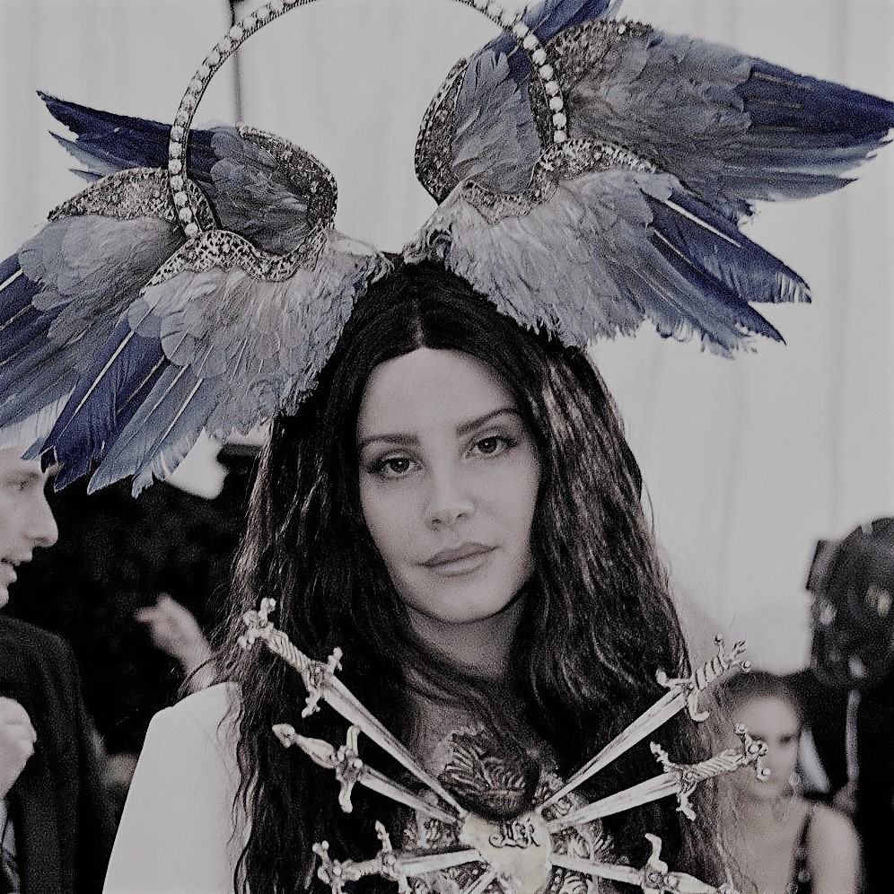
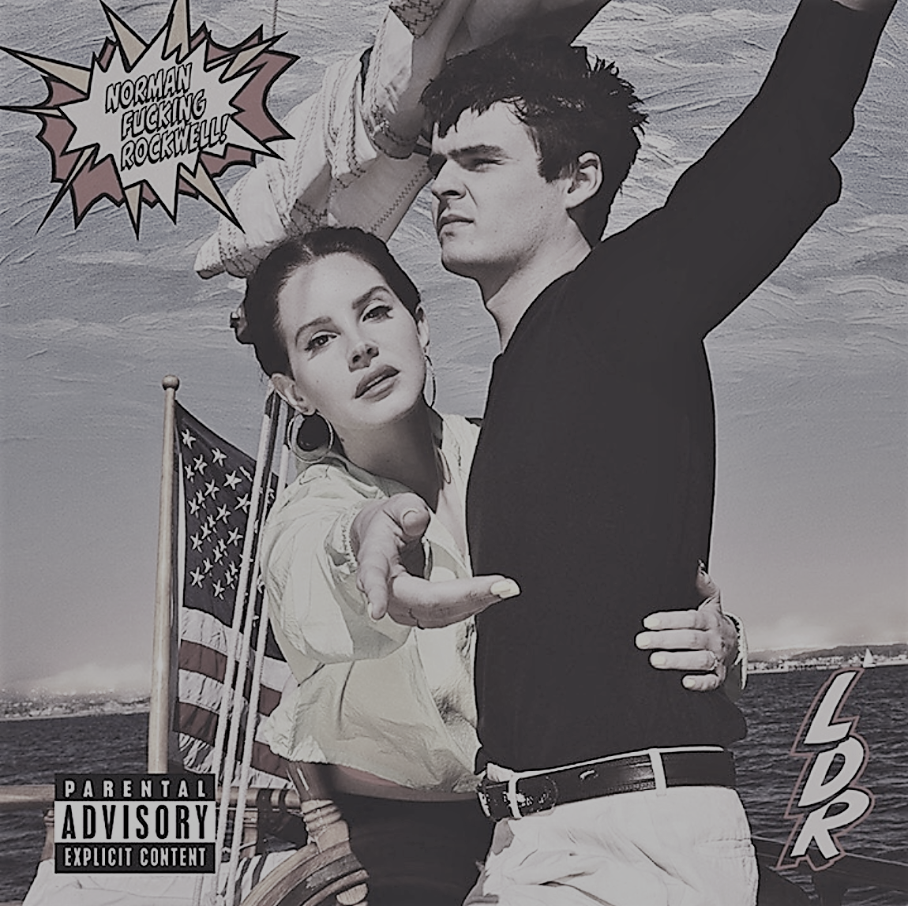
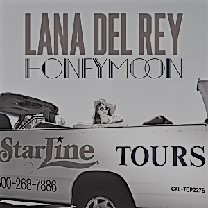
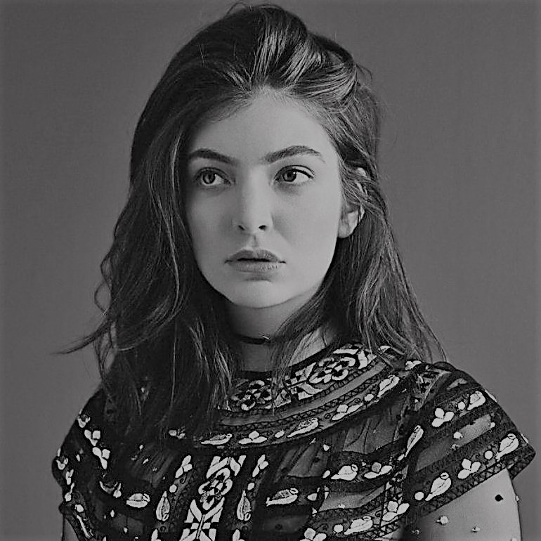
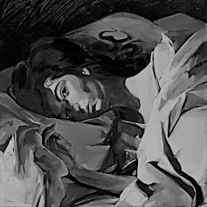
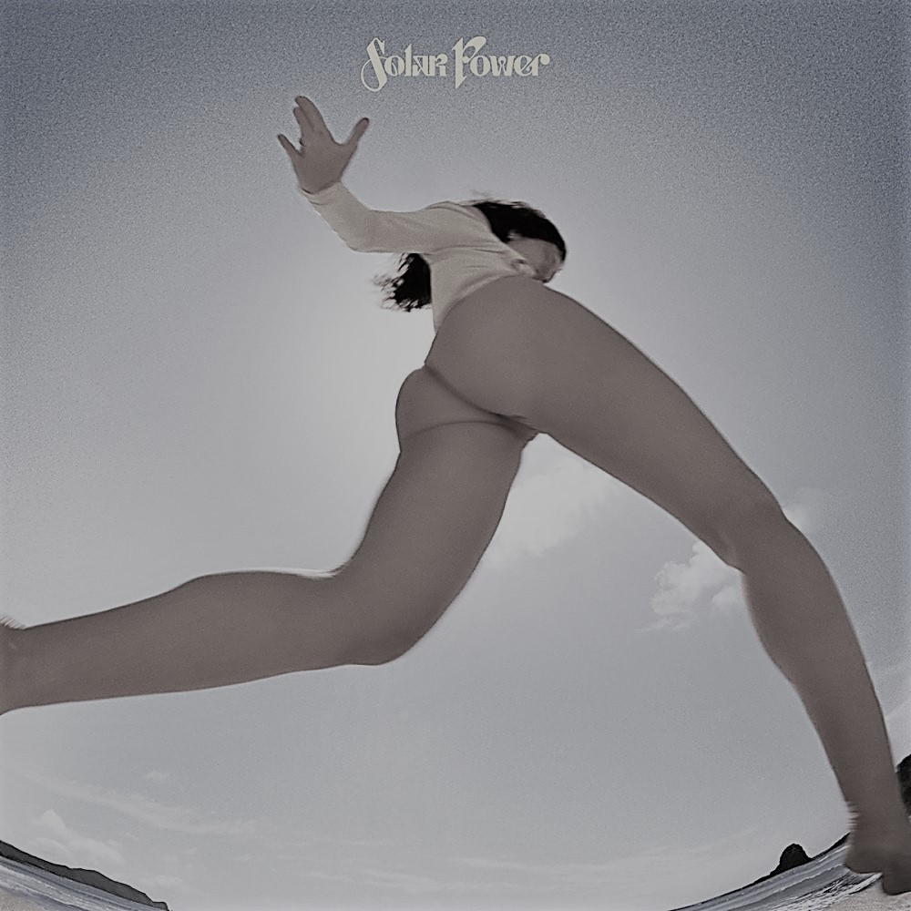

|  |
Lana Del ReyThe indie queen herself, Lana Del Rey. An artist lost in the generation of the Techno. My ultimate. Lana Del Rey mainly writes and sings music about love and life: of beauty and destruction. She incorporates contrasting themes paired with mellow vibe to create wonderful music. |
I am definitely in love with all of her songs. But here are my All-Time Top 3 lana Del Rey bops: How to disappear, Religion, and Not All Who Wander Are Lost. Prepare to get emotional. |
|

How to disappear Lana Del Rey |

Religion lana Del Rey |
Not All Who Wander Are lost lana Del Rey |
|  |
LordeMy first love: Lorde. She is probably known for her famous song Royals, but there is more to her than that. She is an artist who is not afraid of critics, an artist that continues to create an authentic craft for herself and for her fans. She is real. Hauntingly real. She only released 3 albums since her career started. |
But hey, quality over quantity, as they say. So here are my All-Time Top 3 songs of Lorde: The Louvre, Ribs, and The Path. What are you waiting for? Get those earphones now! |
|

The Louvre Lorde |

Ribs Lorde |
 The Path Lorde |